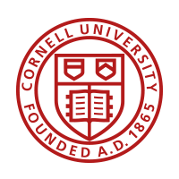
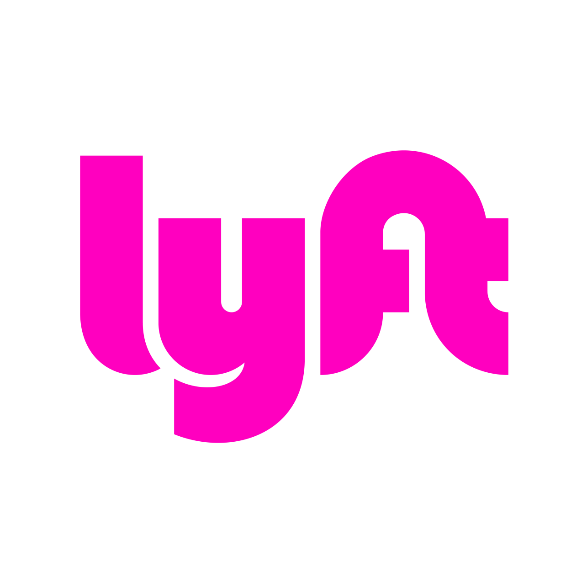
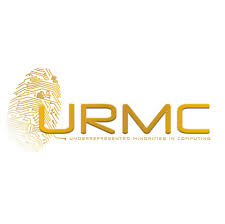

Background
Educational Background

B.S. Computer Science, Cornell University
- Expected December 2020
- Relevant Courses: Algorithms, Natural Language Processing, Language and Information, Computer Networks, Computer Vision, Operating Systems.
Professional Experience
Software Engineering Intern at Google
- Worked on the AppAuth-iOS open source library allowing iOS developers to integrate sign-in with providers such as Google and Okta into their apps.
- Integrated Apple TV support, allowing for sign-in through a phone or other device, reducing user friction.
- Updated and extended Objective-C code, enhanced OAuth standard adherence, wrote unit tests, and documented use for developers.

Software Engineer Intern at Lyft
- Scoped and developed feature for the Lyft app to translate pickup notes between riders and drivers using different app languages
- Integrated and tested Python back-end functionality to fetch and retrieve notes.
- Implemented iOS front-end data presentation with mentor.
- Gained familiarity with experimentation platform and used metrics to justify feature inclusion.
Activities
Cornell Future of Learning Lab
- Developed tool for students to find courses at Cornell using natural language. Site uses React, Python.
- Grew team from solo developer to many.
- Worked with Professor Rene Kizilcec, attended lab meetings.

Underrepresented Minorities in Computing
- Joined in early years of club dedicated to improving resources for underrepresented minority students studying computer and information science at Cornell.
- Served as executive board member in various roles.
Awards
Honorable Mention, Microsoft Imagine Cup Big Idea Contest, February 2018
Our project proposal placed top 10 worldwide. We proposed OpenEDU, a site allowing students to take free advanced courses taught by volunteers. We developed and submitted a prototype of OpenEDU to the Microsoft Imagine Cup in April 2018. https://blogs.msdn.microsoft.com/microsoftimagine/2018/02/21/congratulations-to-the-2018-big-idea-challenge-winners/
Hispanic Heritage Youth Award - Innovation and Technology, December 2016
Awarded Bronze Level Youth Award in Innovation and Technology for my commitment and achievements in STEM and technology.